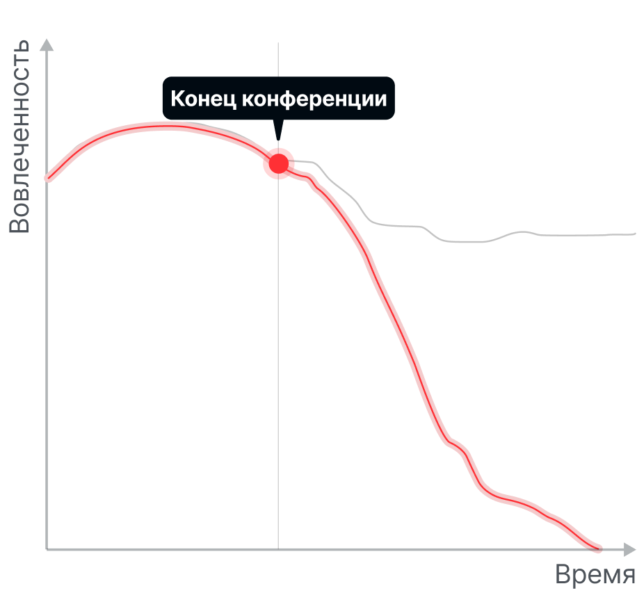
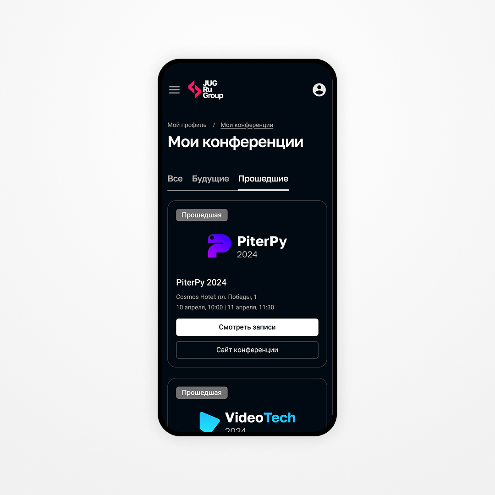
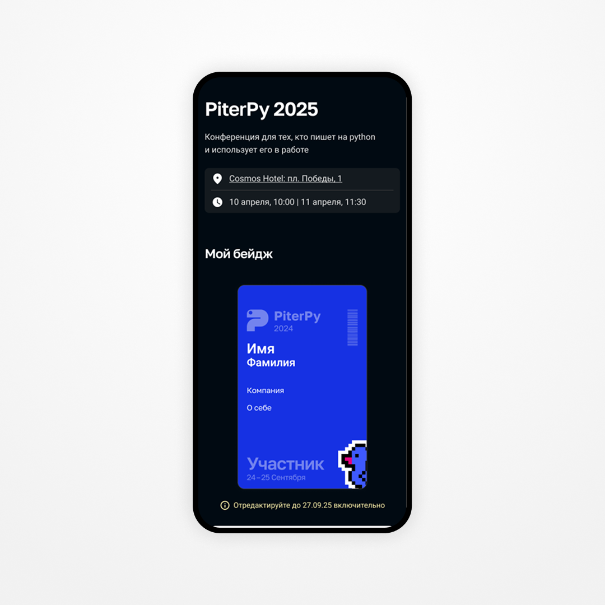
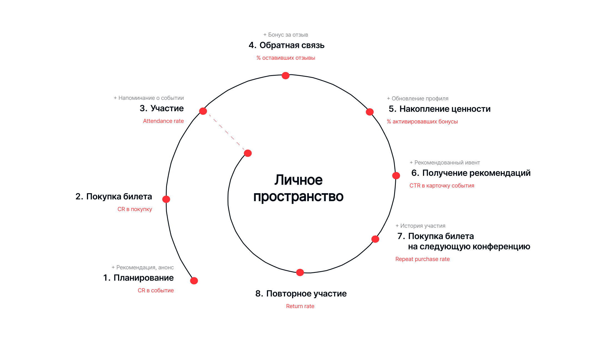

Моя роль
Product Designer
Отвечала за:
- формулировку гипотез удержания
- проектирование пользовательских сценариев
- разработку информационной архитектуры
- проектирование MVP
- визуальную концепцию интерфейса
Работала в связке с продакт-менеджером и разработчиками.
Контекст и проблема
Контекст
Компания проводит крупные технические конференции для IT-сообщества. Каждое событие собирает тысячи участников и получает высокие оценки.
При этом анализ показал:
- большинство пользователей взаимодействуют с брендом только в дни событий
- после конференции контакт практически обрывается
- доля повторного участия ниже потенциальной
Это создаёт риски:
- высокая стоимость привлечения новых участников
- низкая связность между конференциями разных направлений
- недоиспользованный потенциал LTV


Проблема
Опыт участника ограничен несколькими днями конференции.
После завершения события:
- нет личной ценности, к которой хочется вернуться
- нет ощущения прогресса
- нет инструментов, удерживающих внимание между конференциями
Пользователь уходит вдохновлённым, но без причины вернуться.
Цель проекта
Найти механизм продления взаимодействия с участником за пределами дней конференции и создать основу для роста повторного участия.
Дополнительно:
- усилить экосистемную связность между событиями
- повысить ценность участия для пользователя
- заложить основу для роста LTV
Стратегическая гипотеза
Персонализированное личное пространство с накопительной системой ценности и сквозной связностью конференций:
- увеличит вовлечённость после событий
- усилит ощущение личного прогресса
- повысит вероятность повторного участия
Это гипотеза верхнего уровня.
Анализ и ключевые наблюдения
Чтобы спроектировать проверяемое MVP, я:
- Проанализировала текущий кабинет и точки разрыва взаимодействия
- Выделила пользовательские сценарии, влияющие на возвращаемость
- Построила CJM и определила эмоциональный спад после события
- Сформулировала 5 гипотез, направленных на продление взаимодействия
- Спроектировала MVP, покрывающее ключевые сценарии

Анализ сценариев показал:
- пользователь редко возвращается на сайт без личной пользы
- большинство активностей привязаны к конкретной конференции
- участники не знают о других событиях компании, даже если темы им релевантны
- обратная связь не воспринимается как часть ценного опыта
CJM показал резкий спад эмоционального пика после завершения конференции. Основная задача — создать причины для повторного входа в систему.
Тактические гипотезы
Развёртывание стратегической гипотезы в конкретные механики — гипотезы уровня функций.
1. Бонусная программа
Внутренняя валюта за активность и отзывы повысит частоту взаимодействия и сформирует привычку возвращаться. (Механика основана на модели положительного подкрепления.)
2. Профиль достижений
История участия и бейджи усилят ощущение прогресса и накопленного опыта.
3. Единая экосистема конференций
Объединение событий разных направлений повысит кросс-интерес и повторную покупку.
4. Персонализированные рекомендации
Подсказки релевантных конференций расширят охват внутри экосистемы.
5. Доступ к материалам после события
Удобный доступ к контенту увеличит повторные визиты.
MVP для проверки гипотез
Чтобы протестировать гипотезы без избыточной разработки, я сформировала MVP из 5 ключевых разделов (приоритизация через MoSCoW):
1. Профиль
База персонализации: достижения, история участия, баланс бонусов.
Проверяет влияние прогресса на вовлечённость.

2. Мои конференции
Единая точка входа во все события компании.
Проверяет влияние экосистемной связности на повторное участие.

3. Мой план
Личный трек участия, сохранённые доклады, управление опытом.
Проверяет влияние контроля над опытом на вовлечённость.

4. Отзывы
Упрощённая форма обратной связи + бонусы за заполнение.
Проверяет рост активности через мягкую геймификацию.

5. Бонусная программа
Баллы за активность с возможностью использовать до 50% стоимости билета.
Проверяет влияние накопительного механизма на повторную покупку.

Системное решение
Все разделы формируют замкнутый цикл взаимодействия:

Я спроектировала информационную архитектуру так, чтобы:
- снизить фрикцию между разделами
- усилить ощущение прогресса
- объединить конференции в единую систему
- сохранить существующие паттерны компании для снижения когнитивной нагрузки
Метрики для проверки гипотез
При запуске MVP ключевыми метриками стали бы:
Основная метрика
Repeat purchase rate
Поддерживающая
% оставивших отзыв
Поддерживающая
Использование бонусной программы
Поддерживающая
Return rate между событиями
Что я вынесла из этого проекта
Концепт показал: личное пространство может быть не просто профилем, а инструментом управления retention. Даже на уровне MVP обозначились направления, которые способны усилить долгосрочное взаимодействие с брендом и повысить LTV участника.
Следующий шаг — тестирование гипотез на реальных пользователях и измерение влияния каждого раздела на повторную покупку.